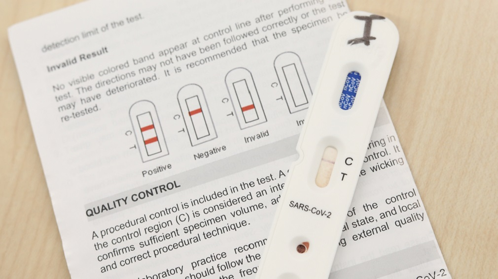

Los test rápidos de Navarra no funcionan: preocupación en los sanitarios por su nula fiabilidad
Que nadie espere encontrar esta noticia en el Diario de Navarra.Los de Cordovilla prefieren poner a toda plana que Chivite tiene planes para reactivar Navarra.Diario de Navarra siempre lamiéndole el culete al Gobierno de Navarra, sea cual sea su color, siempre implorando por nuevas ayudas, subvenciones y publicidad institucional, siempre esperando nuevas inyecciones de dinero como cuando Asiron les visitaba a puerta cerrada y les llenaba la caja fuerte de fajos de billetes para que no hablaran mal de él ni del gobierno del kambio mientras a Navarra.com y a otros diarios digitales de Navarra les ignoraba por no hablar bien del gobierno del kambio..
Posted On: 2020-04-17T13:04:00
Posted By: JKLM
Qué absoluto desastre!!!
Posted On: 2020-04-17T11:37:00
Posted By: Ps6
El comentario ha sido eliminado.
Tú dedícate a oírle a Ferreras
Posted On: 2020-04-18T00:00:00
Posted By: +low
Todos los que tenemos a algún familiar o conocido en centros de Salud lo sabíamos ya a primera hora de la tarde del viernes... ooootra cosa que no funciona.... va a ser que tiene muy mala suerte este gobierno.... o peor... que tenemos muy mala suerte de la mala gestión de PSOE en Madrid y la ( no ) gestión de PSN SALUD PUBLICA aquí.Les pedimos una vez más RESPONSABILIDAD y TRANSPARENCIA .. y GESTIÓN
Posted On: 2020-04-17T16:59:00
Posted By: Lezcairu74
¿Pero no saben cuántos tests han realizado?¡Como lleven así el control de gasto del Gobierno!
Posted On: 2020-04-17T11:50:00
Posted By: Uno de Mendebaldea
El comentario ha sido eliminado.
¿el karma dices?, ¿te perece poco Karma más de 300 muertos?.Ten un poco de humanidad
Posted On: 2020-04-17T13:40:00
Posted By: Navarroa
Asco dan los responsables de que ABSOLUTAMENTE NADA esté funcionando... cero gestión, centenares de muertos en Navarra, que muchos de ellos ni cuentan.CERO TRANSPARENCIA ..karma???Lástima si... porque lo están haciendo peor que mal.
Posted On: 2020-04-17T16:54:00
Posted By: Lezcairu74
???eres consejera del gobierno o algo
Posted On: 2020-04-17T13:32:00
Posted By: Juanito
Consejera... ignorante... lo mismo da que da lo mismo..
Posted On: 2020-04-17T16:55:00
Posted By: Lezcairu74
Pido perdón.La gestión de este Gobierno es modélica e impecable.¿Le gusta mi rectificación?Por favor, no me tutee, un poco más de respeto y educación.
Posted On: 2020-04-18T00:00:00
Posted By: Uno de Mendebaldea
Acabo de entrar en el periódico que no deja comentar y Disneyland Paris es un mendrugo al lado de sus noticias.Aquí no pasa nada, que si hacerse un scape room, que si unos libritos, unas películas.Todo menos noticias, no sea que tengan que enmierdar a los señoritos, señoritas, señorites que les subvencionan
Posted On: 2020-04-18T01:21:00
Posted By: +low
El comentario ha sido eliminado.
Puedes explicar un poco más.
Esos test son solo echar una gota de sangre.
Posted On: 2020-04-18T01:31:00
Posted By: Animoso
El comentario ha sido eliminado.
Y de dónde vas a coger la gota?
La solución es que pasemos por los ambulatorios y nos hagamos un análisis llenando un tubito y mandándolo al laboratorio.
Posted On: 2020-04-18T02:09:00
Posted By: Animoso
El comentario ha sido eliminado.
Gracias por la info.
De todas formas, yo prefiero menos test aunque sea de laboratorio a muchos y desconocer su fiabilidad.
Si se ponen a sacar sangre ¿Cuántos análisis son capaces de hacer?Que pongan personal y maquinaria 24x7
Posted On: 2020-04-18T02:23:00
Posted By: Animoso



Content Date: n/a
Download Date: 2021-04-08
Document ID: L0C049HAB